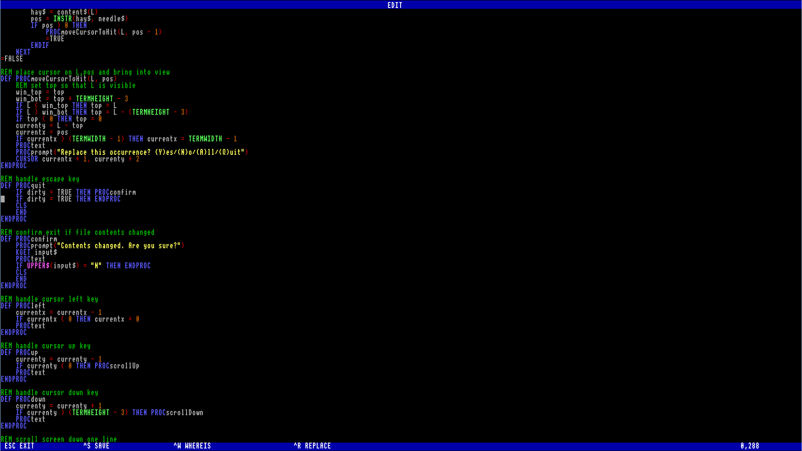

Text Editor
The text editor provides a simple, full-screen way to create and modify text files. It behaves similarly to GNU nano or MS-DOS edit, with clear on-screen prompts and keyboard shortcuts.

Starting the editor
- To edit an existing file:
Moving around
- Use the arrow keys to move the cursor up, down, left, and right.
- Home jumps to the start of the current line.
- End jumps to the end of the current line.
- Page Up and Page Down move through the file a screen at a time.
Editing text
- Simply type to insert characters at the cursor.
- Enter splits the line at the cursor and moves the text to a new line.
- Backspace deletes the character to the left of the cursor.
- Delete removes the character under the cursor.
- Lines will join together automatically if you backspace at the start of a line or delete at the end.
Saving your work
- Press Ctrl+S to save.
- If the file already has a name, you’ll be asked whether to keep it.
- If it’s a new file, you’ll be prompted to enter a name.
Searching and replacing
- Ctrl+W starts a search. Type the text to look for, and the editor will highlight the first match.
- Ctrl+R begins search and replace.
- Type the text to search for.
- Type the replacement text.
- For each match you can choose:
- Y – replace this one
- N – skip
- A – replace all
- Q – quit replacing
Syntax highlighting
- Press Ctrl+T to toggle syntax highlighting on or off.
- When enabled, BASIC keywords are coloured for easier reading.
- This affects only the display, not the saved file.
Exiting the editor
- Press ESC to quit.
- If you have unsaved changes, the editor will ask you to confirm before closing.
Quick reference
| Key | Action |
| ESC | Exit editor |
| Ctrl+S | Save file |
| Ctrl+W | Search |
| Ctrl+R | Search and replace |
| Ctrl+T | Toggle syntax highlighting |
| Arrows | Move cursor |
| Home | Move to start of line |
| End | Move to end of line |
| PgUp | Page up |
| PgDn | Page down |
| Enter | Split line |
| Backspace/Delete | Remove characters |